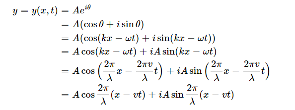
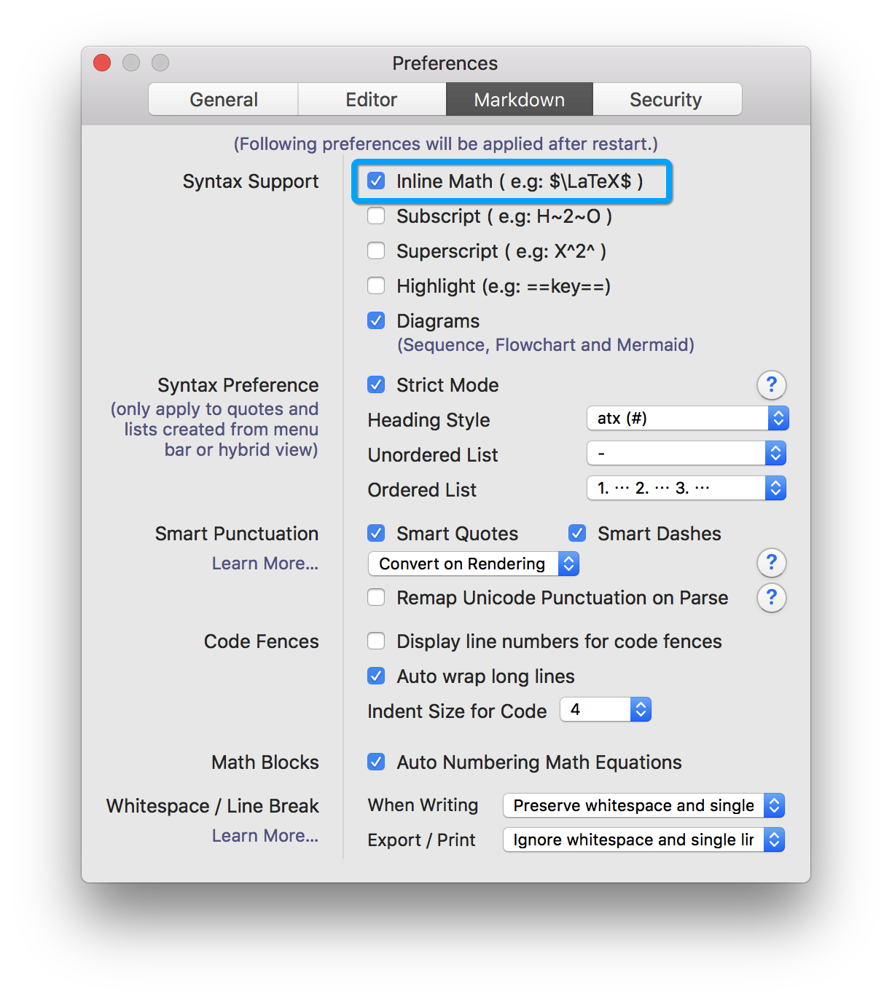
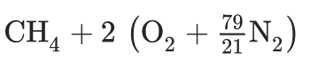
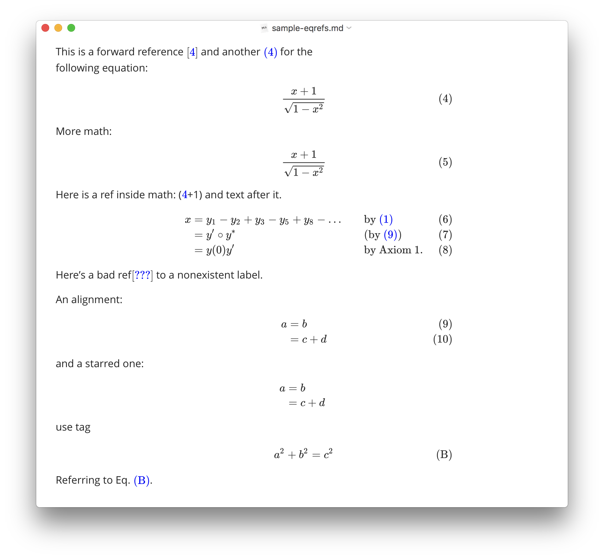

Математические и академические функции в Typora
Перевод страницы документации Typora Math and Academic Functionsopen in new window.
Typora отображает математические формулы записанные в Tex/LaTeX. Для их обработки используется MathJaxopen in new window.
Математический блок (Math Block)
Математические блоки LaTeX обрамляются символами $ и переводом строки, например:
$
\begin{align*}
y = y(x,t) &= A e^{i\theta} \\
&= A (\cos \theta + i \sin \theta) \\
&= A (\cos(kx - \omega t) + i \sin(kx - \omega t)) \\
&= A\cos(kx - \omega t) + i A\sin(kx - \omega t) \\
&= A\cos \Big(\frac{2\pi}{\lambda}x - \frac{2\pi v}{\lambda} t \Big) + i A\sin \Big(\frac{2\pi}{\lambda}x - \frac{2\pi v}{\lambda} t \Big) \\
&= A\cos \frac{2\pi}{\lambda} (x - v t) + i A\sin \frac{2\pi}{\lambda} (x - v t)
\end{align*}
$
2
3
4
5
6
7
8
9
10
будет отображено как

Для ввода математического блока введите $ и нажмите Enter . В режиме ввода в математический блок используйте стрелки Вверх и Вниз или Ctrl+Enter для завершения ввода, или просто кликните в любом месте вне блока.
Встроенная математика (Inline Math)
Прежде всего, пожалуйста, включите параметр inline math в панели настроек в секции Markdown. Панель настроек открывается из главного меню File->Preferences. Эти настройки применяются после перезапуска Typora.

Встроенная математика использует такой синтаксис lt;Math Expressions>$, например:
Такая формула $f = \frac{2 \pi}{T}$ используется для...
Typora поддерживает команды Tex
Список всех поддерживаемых Tex командopen in new window.
Новые команды добавляются через \def или \newcommand. Например:
$
\def\bold#1
\bold{this\ is\ now\ bold}
$
2
3
4
5
Химические выражения
Typora содержит встроенное расширение mhchemopen in new window для отображения химических выражений, например выражение
$\ce{CH4 + 2 $\left( \ce{O2 + 79/21 N2} \right)$}$
Будет отображаться как

Подробнее, пожалуйста, смотрите https://mhchem.github.io/MathJax-mhchem/open in new window.
Перекрёстные ссылки
Typora поддерживает TeX-синтаксис ссылок, например:
Это помеченное уравнение:
$
x+1\over\sqrt{1-x^2}\label{ref1}
$
Это ссылка: $\ref{ref1}$
2
3
4
5
6
7
Автонумерация
Typora поддерживает автоматическую нумерацию математических блоков. Для включения этой функции, пожалуйста, откройте панель настроек и включите Auto Numbering Math Equations в секции Markdown.

Проблемы
Принудительное обновление
Когда отображение математики происходит с ошибками, например, слишком широкие блоки, или сбилась нумерация блоков, вы можете принудительно обновить всю математику из меню Edit > Math Tools.
Ограничения
MatJax поддерживает ограниченное подмножествоopen in new window команд LaTeX.
Не все форматы экспорта поддерживают математику. Некоторые команды и функции LaTeX могут быть недоступны после экспорта.